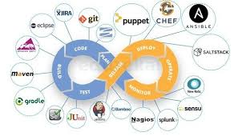

DevOps in the Real-World
Cloud computing at it's core is offloading hardware/network infrastructure and operating system administration to someone else. You frequently pay for that on a monthly basis, or like you would normally pay for a service. It gives you a place to run code, store data, run someone else's code, have them run their code for you, or any number of variations, which is where you run into all the "something as a service" buzzwords. DevOps started as a term for managing and turning around build environments and fast/easy code deployment for developers. It includes things like change control, version control, automation, etc. However, many of the tactics were found to be a pretty good fit for managing production environments as well, so it started to spill over and mix together. Now it's frequently used as a term for managing your IT infrastructure, configuration management, and code deployment.
